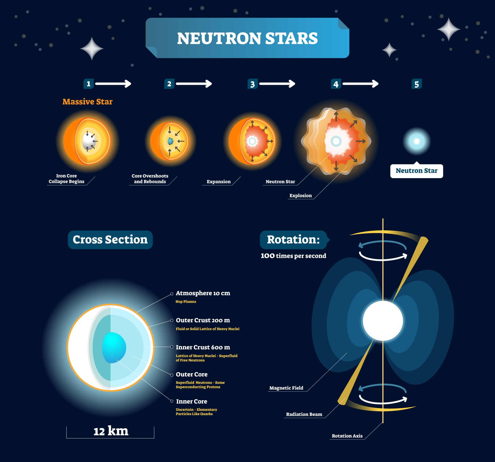
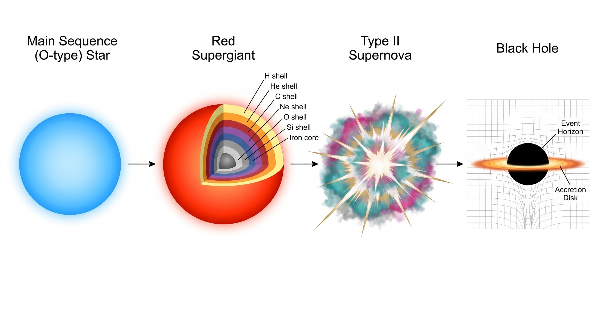
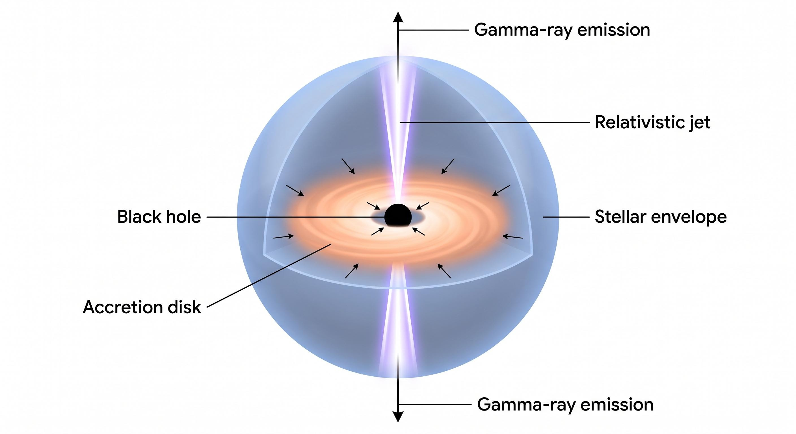
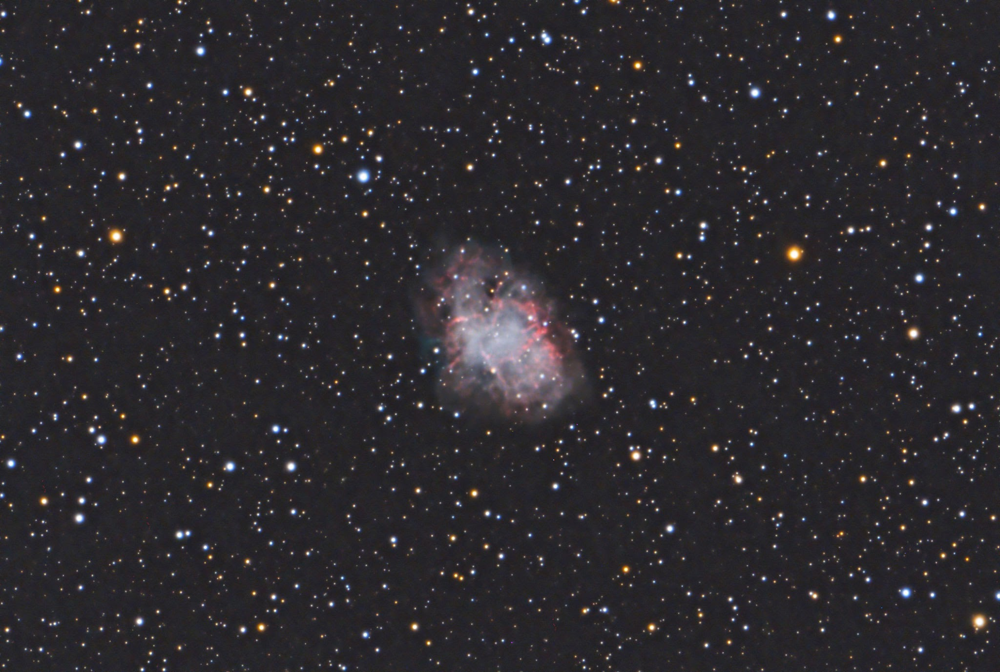
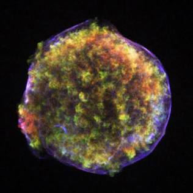

Para comprender la escala definitiva de la destrucción estelar y el peligro absoluto que representan las supernovas e hipernovas, es fundamental definir primero qué es una supernova y cuáles son los mecanismos físicos que desencadenan este colapso monumental. Una supernova es la explosión estelar más colosal y violenta conocida en el universo, la cual marca el fin catastrófico de la vida de una estrella masiva o la detonación termonuclear descontrolada de una enana blanca en un sistema binario. Existen principalmente dos categorías fundamentales de supernovas: las de tipo uno a, que ocurren cuando una enana blanca acumula suficiente materia de una estrella compañera hasta superar el límite de Chandrasekhar, fijado de manera precisa en uno coma cuarenta y cuatro masas solares, lo que provoca una reacción termonuclear descontrolada que destruye por completo el astro sin dejar rastro de un núcleo remanente; y las de tipo dos, uno b y uno c, conocidas como supernovas de colapso de núcleo, que se originan cuando una estrella supergigante con una masa superior a ocho veces la del Sol agota por completo el combustible nuclear en su centro, incapaz de seguir contrarrestando la fuerza de gravedad mediante la presión de radiación.

A partir de esta definición, el proceso físico que opera en una supernova de colapso de núcleo es un despliegue de violencia termodinámica sin igual en la naturaleza. Cuando la estrella agota sus reservas de hidrógeno, helio, carbono, oxígeno y silicio, su núcleo se transforma en una densa estructura compuesta de hierro, un elemento que ya no puede fusionarse para liberar energía, sino que absorbe calor en el proceso. En cuestión de milisegundos, la presión de degeneración de electrones cede ante la implacable atracción gravitacional, provocando que el núcleo colapse sobre sí mismo a una cuarta parte de la velocidad de la luz. Los electrones y protones son aplastados y se fusionan para formar neutrones y un torrente inimaginable de neutrinos, generando una densidad tal que una sola cucharadita de esa materia pesaría miles de millones de toneladas. Cuando el núcleo alcanza la densidad de saturación nuclear rebota violentamente, enviando una onda de choque hacia el exterior que, combinada con la presión de los neutrinos atrapados, hace estallar las capas externas de la supergigante en una fracción de segundo, liberando en pocas semanas una cantidad de luz y energía cinética equivalente a la que el Sol emitirá a lo largo de sus diez mil millones de años de existencia teórica.

En el escalón más extremo de esta categoría se encuentran las hipernovas, variantes hipermasivas de las supernovas ordinarias que ocurren cuando una estrella supergigante rotatoria con una masa superior a treinta o cuarenta masas solares colapsa directamente para formar un agujero negro en lugar de una estrella de neutrones, o cuando se produce la fusión violenta de dos estrellas de neutrones. Las hipernovas liberan hasta cien veces más energía que una supernova estándar y son consideradas las progenitoras directas de los estallidos de rayos gamma de larga duración, expulsando chorros relativistas de plasma que barren el espacio a velocidades del noventa y nueve coma nueve por ciento de la velocidad de la luz. Estar expuesto a la radiación y a la onda expansiva de una supernova o hipernova a una distancia menor a treinta o cincuenta años luz significaría la destrucción absoluta de cualquier atmósfera planetaria, la erosión de la capa de ozono por rayos gamma y la irradiación letal de toda la superficie con rayos cósmicos de alta energía, convirtiendo estos eventos en amenazas reales para la estabilidad de la vida en cualquier rincón galáctico densamente poblado.

Entre los ejemplos históricos y mejor documentados de estos eventos en nuestra propia galaxia destaca la Nebulosa del Cangrejo, designada científicamente como Messier uno, la cual corresponde a los restos en expansión de una supernova observada por astrónomos chinos, árabes e indígenas americanos en el año mil cincuenta y cuatro de nuestra era. Este remanente, situado a unos seis mil quinientos años luz de la Tierra en la constelación de Tauro, alberga en su centro un púlsar altamente magnetizado que gira treinta veces por segundo, emitiendo radiación sincrotrón en todo el espectro electromagnético y demostrando la persistencia de la energía remanente tras el colapso inicial. Otro hito fundamental en la astronomía moderna fue la supernova SN mil novecientos ochenta y siete a, ubicada en la Gran Nube de Magallanes a unos ciento sesenta y ocho mil años luz de distancia, cuya explosión permitió a los científicos detectar por primera vez los neutrinos emitidos durante el colapso del núcleo estelar, confirmando los modelos teóricos de la física de supernovas en tiempo real.

Asimismo, la historia de la astronomía registra eventos que sacudieron los cielos terrestres sin dejar un remanente visible inmediato de origen moderno, como la Supernova mil quinientos setenta y dos, conocida como la Supernova de Tycho, o la Supernova de Kepler observada en el año mil seiscientos cuatro, ambas pertenecientes a la categoría de tipo uno a. La supernova de Tycho, situada a unos ocho mil años luz de distancia, brilló con una intensidad tal que superó el brillo del planeta Venus y fue visible a plena luz del día durante varias semanas, permitiendo al astrónomo danés Tycho Brahe demostrar que los cielos no eran inmutables como dictaba la filosofía aristotélica. Estos eventos demuestran que las supernovas no son reliquias de un universo lejano, sino procesos activos y recurrentes que configuran la química del cosmos y representan el poder destructivo latente en la evolución estelar.
